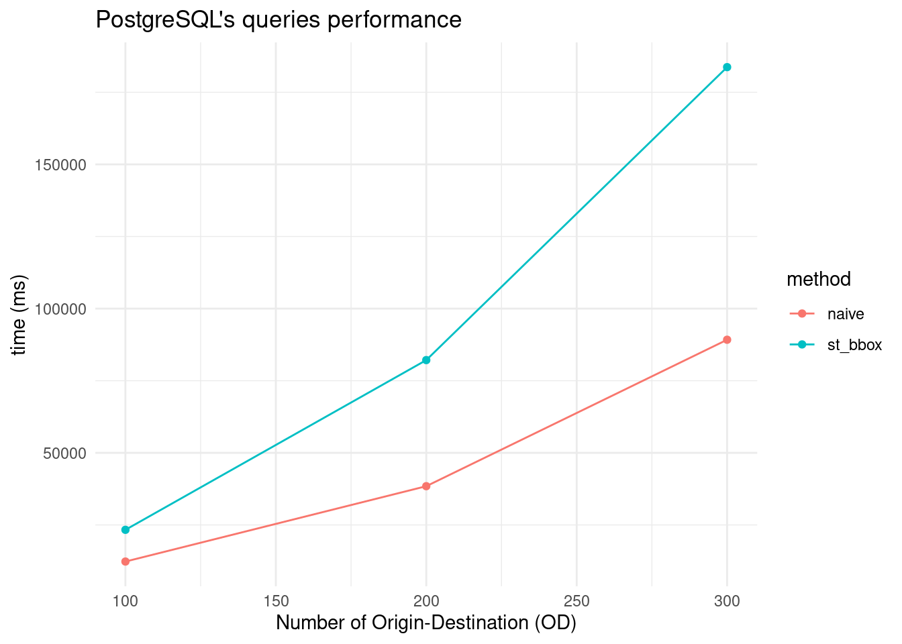

Show the code
lapply(c("readODS","tidyverse","ggplot2","DT"), require, character.only =TRUE)[[1]]
[1] TRUE
[[2]]
[1] TRUE
[[3]]
[1] TRUE
[[4]]
[1] TRUEShow the code
performance <- readODS::read_ods("metrics.ods")
df <- performance |> dplyr::select(c("number_od","method","algorithm","time","max_centrality","count_rows","query","analyze")) |> filter(!is.na(time) & method %in% c('naive','array_agg','st_bbox'))
ggplot(df,aes(x=number_od, y=time, group = algorithm)) +
labs(x="Number of Origin-Destination (OD)",
y="time (ms)",
title="PostgreSQL's queries performance") +
geom_line(aes(color=algorithm)) +
geom_point(aes(color=algorithm)) +
theme_minimal()
Show the code
ggplot(filter(df, method %in% c('st_bbox','naive') & algorithm == 'pgr_astrar()' & number_od >=100),aes(x=number_od, y=time, group = method)) +
labs(x="Number of Origin-Destination (OD)",
y="time (ms)",
title="PostgreSQL's queries performance") +
geom_line(aes(color=method)) +
geom_point(aes(color=method)) +
theme_minimal()
Show the code
DT::datatable(subset(df, select=c("number_od","algorithm","time","query","analyze")),
class='compact', rownames=FALSE, escape=FALSE, caption='Data description',
extensions=c("Buttons",'RowGroup'),
options=list(
order=list(list(0, 'asc'), list(2,'asc')), # Sort by the first column (index 0)
rowGroup=list(dataSrc=0), # Fixed rowGroup
dom="Bfrtip",
columnDefs = list(list(visible=FALSE, targets= c(3,4))),
buttons=c("copy", "csv", "pdf"),
initComplete = JS(
"function(settings, json) {",
"$(this.api().table().header()).css({'background-color': '#d50038', 'color': '#fff'});",
"}")
)
) |>
DT::formatStyle("time",
background=DT::styleColorBar(range(df$time), '#ee8b8b'),
backgroundSize='98% 88%',
backgroundRepeat='no-repeat',
backgroundPosition='center')